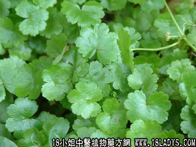

盘上芫荽(中药材植物名:天胡荽)(植物科目:伞形花科)

植物名：天胡荽。
生长环境：本品为多年生草本。多生于较潮湿草地，稍荫蔽的庭园，或花盆上。
分布：广布于热带亚洲，我国长江以南各省均有分布，广东平原地带常可见。
入药部分：全草。
采集期：全年。
自采地点：花盆上或野生。
性味：性平、味淡、气微香。
功能：祛风、除痰、止咳。
主治、用量和用法：小儿伤风咳：生用2～3钱，捣烂加清水半杯，蜜糖适量，炖半小时服。
（方歌）盘上芫荽平淡香，除痰止咳伤风寒，捣烂成糊加水蜜，小儿风咳服之安。
本文解释权归中药大全，本文地址：https://www.daquan.com/post/1580.html